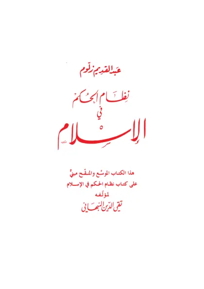

نظام الحكم في الإسلام
The Ruling System in Islam
Baca The Ruling System in Islam (نظام الحكم في الإسلام) karya Taqiyuddin an-Nabhani secara gratis di Maktabah Ilmu: teks Arab, Indonesia, Inggris. Tanpa daftar, tanpa iklan.
Buka kitab iniLihat lemari ilmuDaftar isi
- Preface
- Foreword
- Introduction
- Ruling in Islam
- The Islamic State (1)
- The Islamic State (2)
- The Principles of Ruling
- The Structure of the State (1)
- The Structure of the State (2)
- The Structure of the State (3)
- The Structure of the State (4)
- The Khilafah State is a Human State and not a Theological State
- Leadership in Islam is Singular and not Collective
- Ameer of Jihad (1)
- Ameer of Jihad (2)
- The Wulat (Wulah) Governors
- Judiciary (1)
- Judiciary (2)
- The Administration System
- The Council of the Ummah (1)
- The Council of the Ummah (2)
- Islam Must be Implemented as a Whole. Gradual Implementation is Haram
- Police State
- Establishing Political Parties is Fard Kifayah
- The Guarantee of the Implementation of Islam